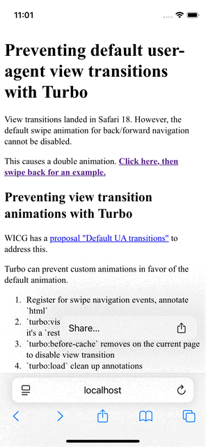

View transitions landed in Safari 18. However, the default swipe animation for back/forward navigation cannot be disabled.
This causes a double animation. For an example, click here, then swipe back.
WICG has a proposal "Default UA transitions" to address this.
Turbo can prevent custom animations in favor of the default animation.
// 1. Register for swipe navigation events, annotate `html`
window.addEventListener('touchend', () => document.documentElement.setAttribute('data-jch-navigate-touch', true));
window.addEventListener('touchcancel', () => document.documentElement.setAttribute('data-jch-navigate-touch', true));
window.addEventListener('wheel', () => document.documentElement.setAttribute('data-jch-navigate-touch', true)); // Mac two finger swipe
document.addEventListener('turbo:visit', (event) => {
document.documentElement.setAttribute('data-turbo-visit-action', event.detail.action);
});
// 2. `turbo:before-cache` removes on the current page to disable view transition
// Comment out to see the double animation
document.addEventListener('turbo:before-cache', (event) => {
const action = document.documentElement.getAttribute('data-turbo-visit-action');
const touch = document.documentElement.getAttribute('data-jch-navigate-touch');
if (action === 'restore' && touch) {
console.log('turbo:before-cache removing view-transition meta tag');
document.documentElement.querySelector("meta[name='view-transition']").remove();
}
});
// 3. `turbo:load` clean up annotations
document.addEventListener('turbo:load', () => {
document.documentElement.removeAttribute('data-turbo-visit-action');
document.documentElement.removeAttribute('data-jch-navigate-touch');
});
This has been tested with the latest turbo as of this writing turbo@8.0.12